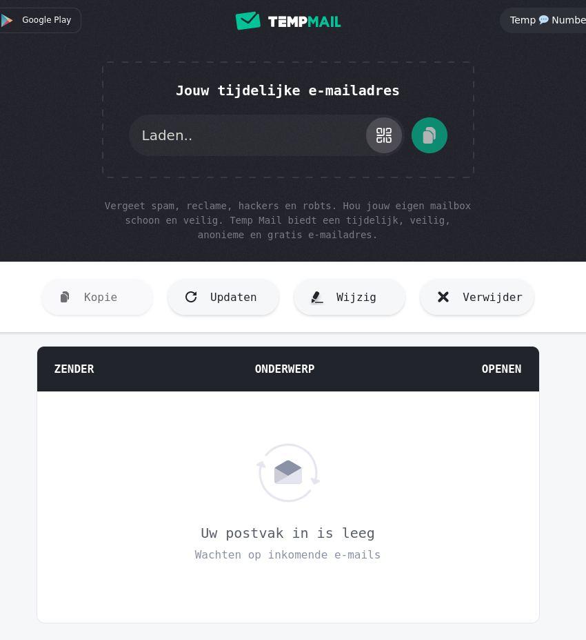

Vervolg klassikale oefening
- winkelen.netnoobs.nl moet werken
- dit is dezelfde website als klanten.netnoobs.be
Tijdelijk mailadres

- server IP (zelfde voor iedereen)
- container ID (individueel)
- loginnaam (individueel)
- poortnummer (individueel)
- wachtwoord (individueel)
ssh USERNAAM@SERVERIPdocker exec -it CONTAINERID bashapt update; apt install -y nano; nano htdocs/index.html- bewerk de HTML en sla op zodat je je eigen site kan herkennen
- surf naar de website (hoe?)
- registreer via FreeDNS
- controleer propagatie via whatsmydns
- surf via domeinnaam naar de website
SSH
authorized_keys
known_hosts
config
scp /path/to/local/file username@remotehost:/path/to/remote/directory
scp username@remotehost:/path/to/remote/file /path/to/local/directory
- sleutelspaar aanmaken:
ssh-keygen -t rsa -b 4096 met defaults en lege
passphrase
- kijk in (verborgen map)
.ssh
- kopieer naar server:
ssh-copy-id -i ~/.ssh/id_rsa.pub username@remotehost
- dit combineert
scp met een append
- log in op de server
chmod 700 ~/.ssh beperkt rechten mapchmod 600 ~/.ssh/authorized_keys beperkt rechten file- test login zonder wachtwoord
- registreer public key in Github
- maak een niet-lege repo, clone via SSH, commit iets, push